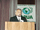
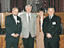

12-13 октября 2000 г. в Витебске состоялась международная конференция «Проблемы рационального использования антибиотиков»
12-13 октября 2000 г. в Витебске состоялась международная конференция «Проблемы рационального использования антибиотиков». Конференция проходила под эгидой ALLIANCE FOR THE PRUDENT USE OF ANTIBIOTIC (APUA).
Белорусское отделение Международного союза за разумное применение антибиотиков работает в течение года, и прошедшая конференция явилась своеобразным итогом активной и плодотворной деятельности отделения.
В конференции участвовали зарубежные (проф. Джузеппе Корнаглия, Италия), российские (проф. В.Б. Белобородов, А.В. Дехнич, к.м.н. Р.С. Козлов, к.м.н. В.В. Рафальский, проф. Л.С. Страчунский) и белорусские докладчики (проф. И.А. Карпов, проф. А.Н. Косинец, проф. Л.П. Титов, проф. В.М. Семёнов).
Были подняты проблемы политики применения антибиотиков, состояния и мониторинга антибиотикорезистентности, антибактериальной терапии сепсиса, хирургических и кишечных инфекций, гнойного менингита, стафилококковых и пневмококковых инфекций, хламидиозов, нежелательных лекарственных реакций на антибиотики.
Фотографии с конференции
(выберите нужную для просмотра увеличенного изображения):
|  | проф. В.М. Семенов |
|  | (слева направо): проф. В.М. Семенов, проф. Л.П. Титов, доцент Т.И. Дмитраченко, проф. Л.С. Страчунский |